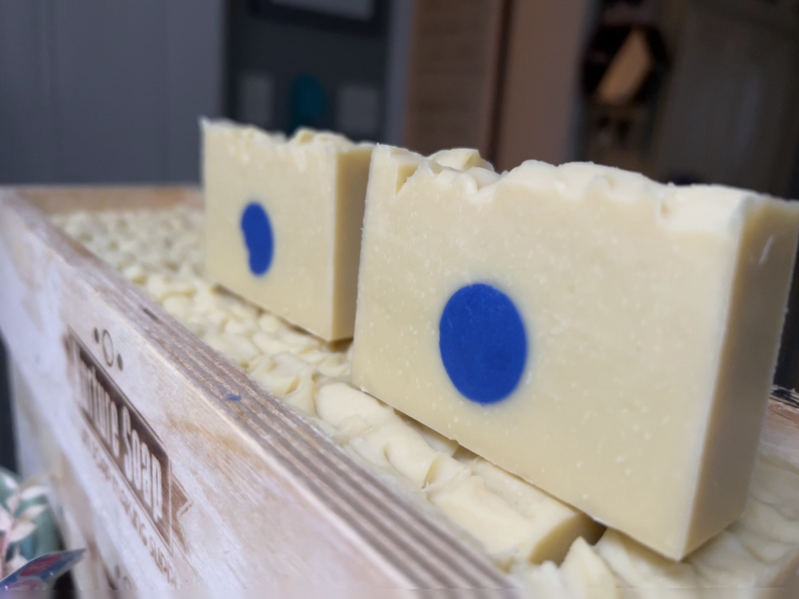
MK Soap
Handcrafted in Watertown, MA. On hiatus, back in a future season from our new home upstate in New York.
From past batches
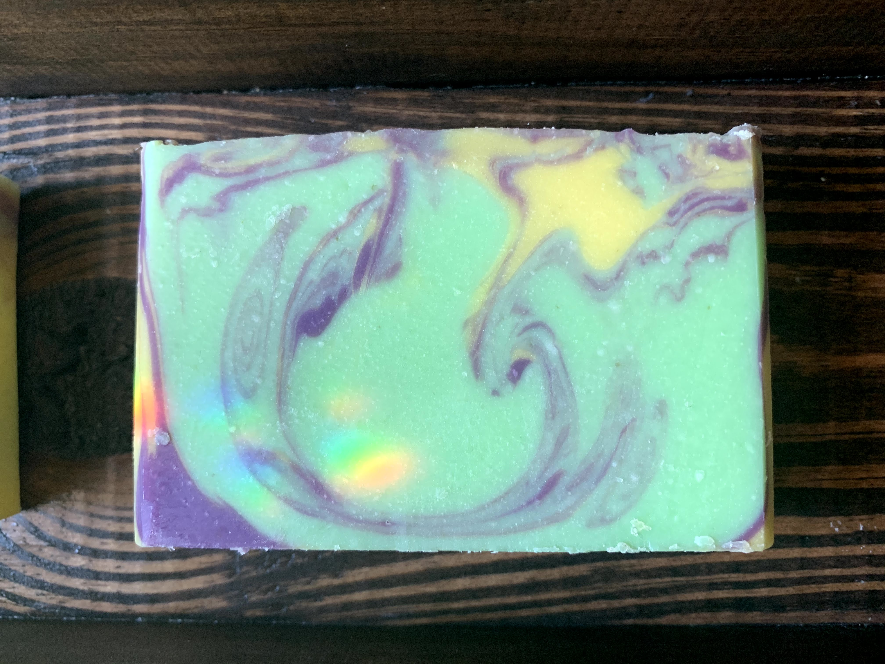
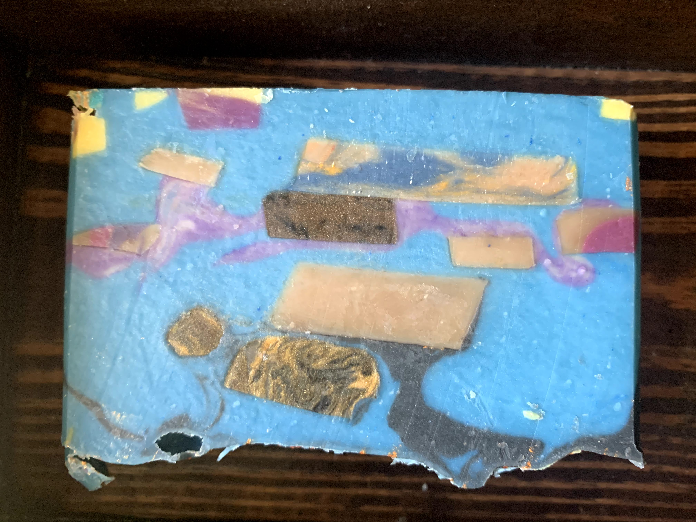
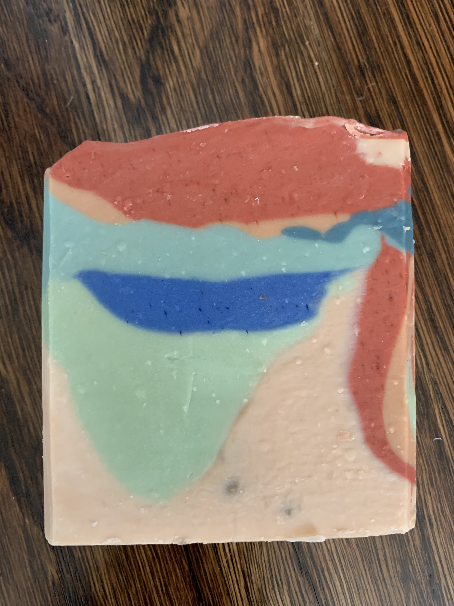
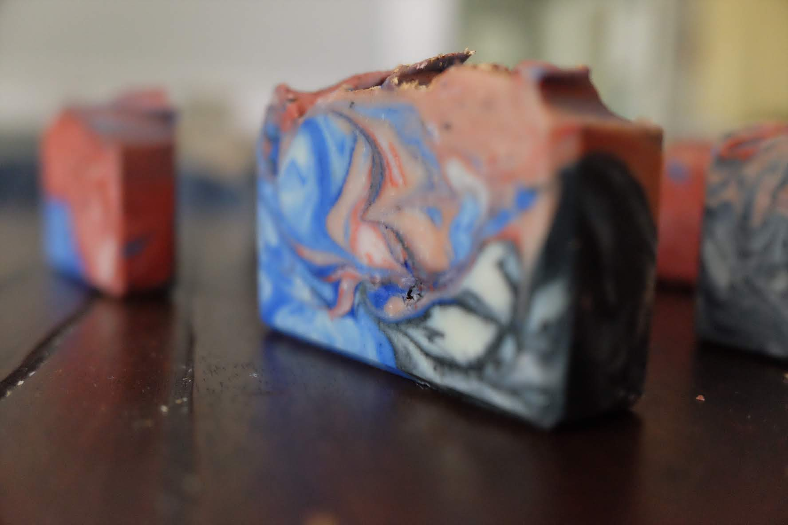
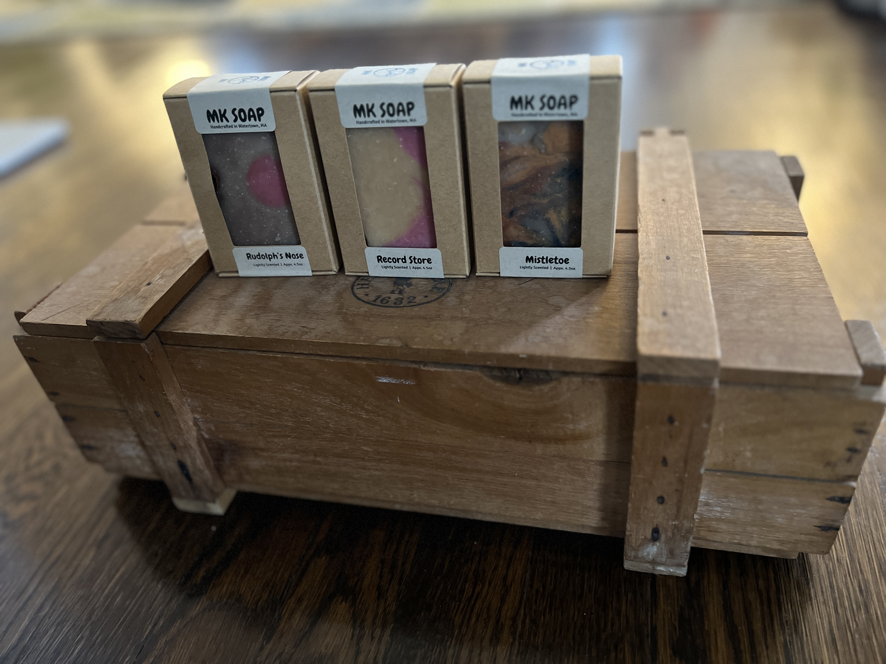
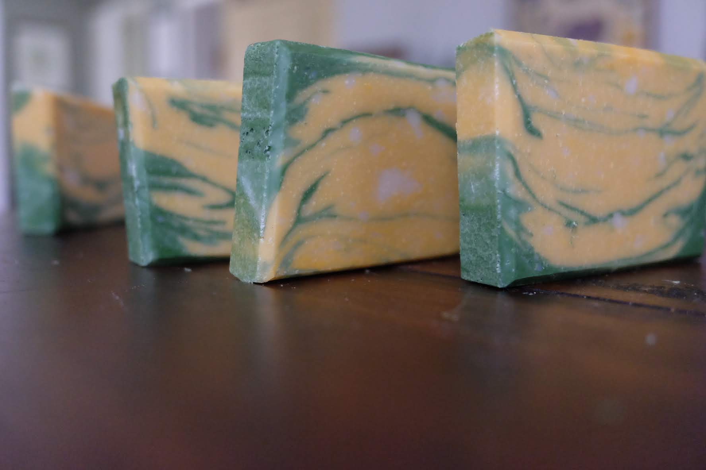
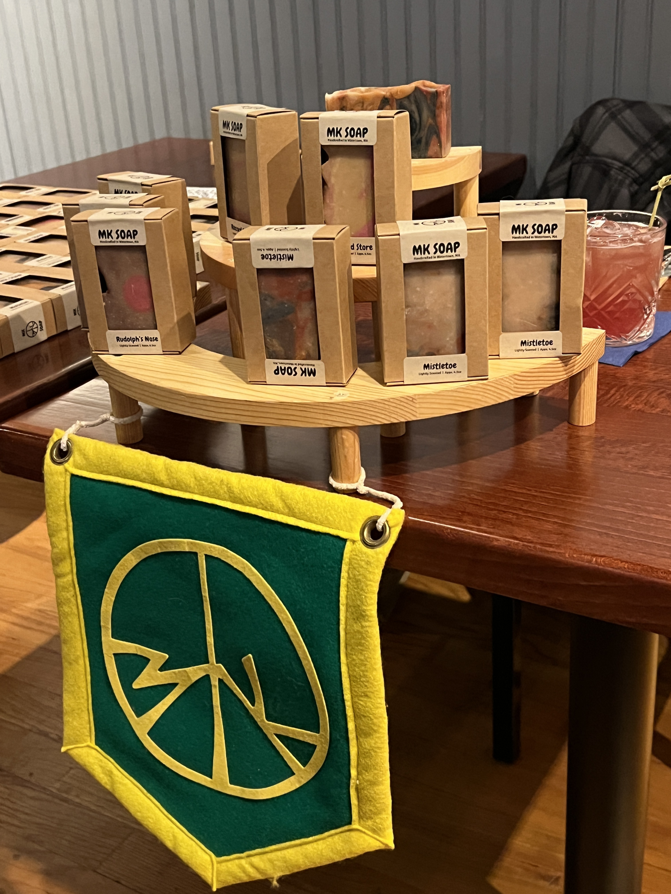
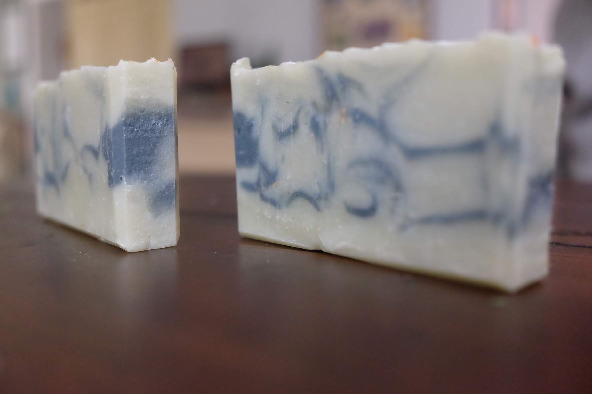
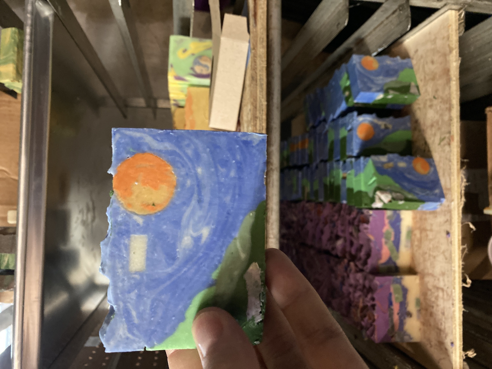
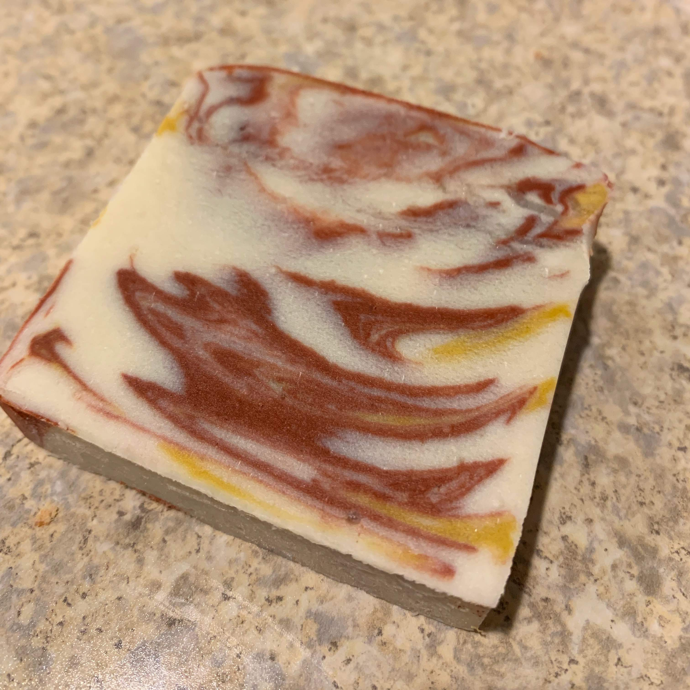
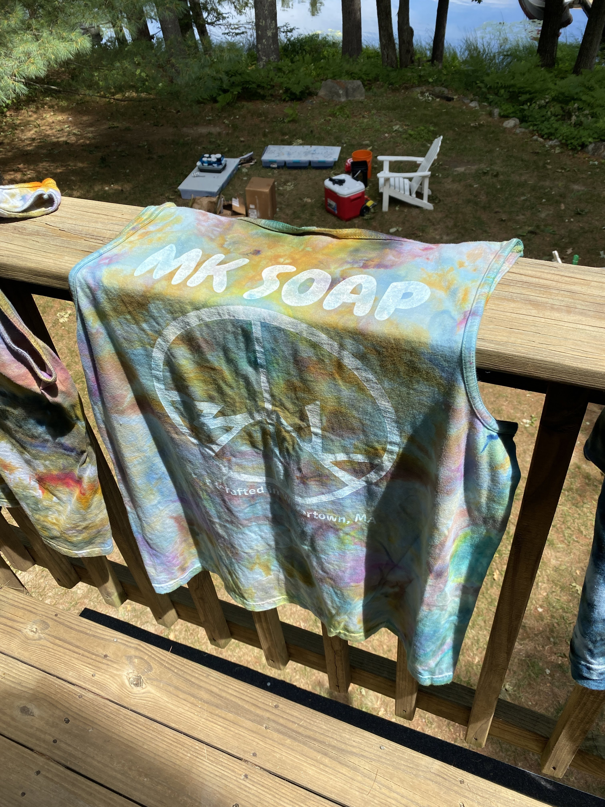
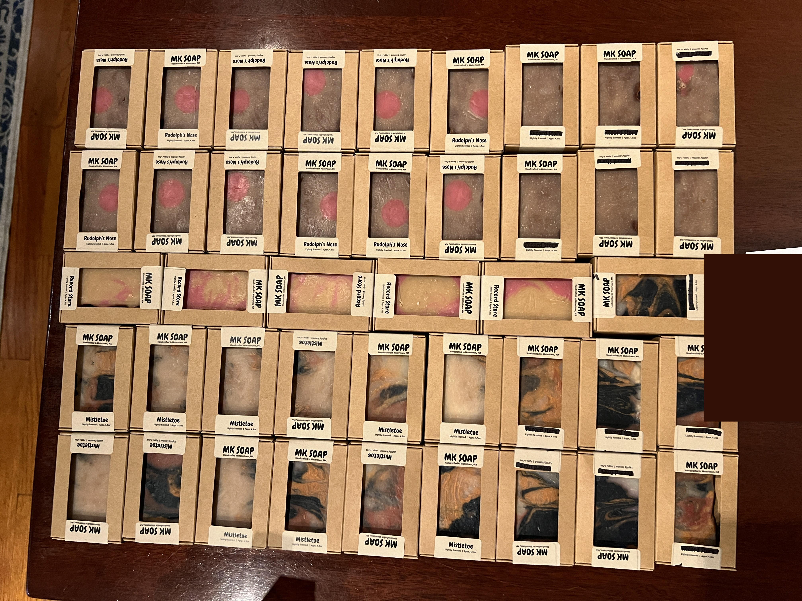
Our story
MK Soap Co began in early 2018 and blossomed into a local farmer's market and a snowballing small business. Today MK Soap operates out of a hundred acre wood in upstate New York, the future home of a larger vision for an Arboretum and Botanical Garden. Please come back and visit as our offering expands in a future season.